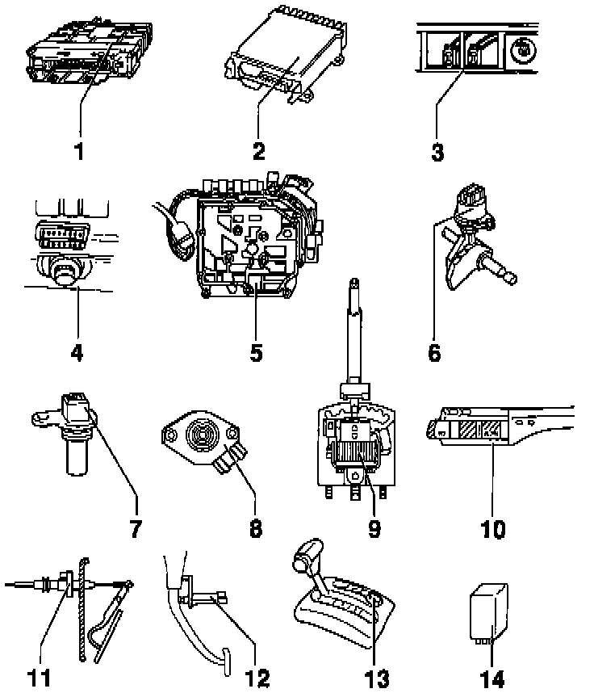

096 Transmission
COMPONENTS TESTED BY ON-BOARD DIAGNOSTICS
NOTE: If the Engine Control Module (ECM) or Transmission Control Module (TCM) is replaced, or if the repairs are performed on the Throttle Position (TP) Sensor; the system must be restored to the basic setting.
1. Transmission Control Module (TCM) -J217.
2. Engine Control Module (ECM).
3. Data Link Connectors (DLC's).
- Vehicles built before Aug 1993 (1993 Model Year Cars).
4. 16 Pin Data Link Connector (DLC).
- Vehicles built after Aug 1993 (1994-on Model Year Cars).
5. Valve Body.
- The Solenoid Valves -N88, -N89, -N90, -N91,-N92, -N93, -N94 and the Transmission Fluid Temperature Sensor -G93 are attached to the valve body.
6. Multi-function Transmission Range (TR) Switch -F125.
7. Vehicle Speed Sensor (VSS) -G68.
8. Throttle Position (TP) Sensor -G69.
9. Shift Lock Solenoid -N110.
10. Cruise Control Switch -E45.
11. Kickdown Switch -F8.
12. Brake Light Switch -F.
13. Transmission Range (TR) Program Switch -E122.
- May be either push-button or rotary switch, (not interchangeable).
- Not used on vehicles with electronic program switch in Transmission Control Module (TCM).
14. Park Neutral Position (PNP) Relay -J226.